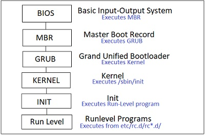

The following are the 6 high level stages of a typical Linux boot process.

1. BIOS
BIOS stands for Basic Input/Output System Performs some system integrity checks, Searches, loads, and executes the boot loader program.
It looks for boot loader in floppy, cd-rom, or hard drive.
You can press a key (typically F12 of F2, but it depends on your system) during the BIOS startup to change the boot sequence.
Once the boot loader program is detected and loaded into the memory, BIOS gives the control to it.
So, in simple terms BIOS loads and executes the MBR boot loader.
2. MBR
MBR stands for Master Boot Record.
It is located in the 1st sector of the bootable disk, Typically /dev/hda, or /dev/sda MBR is less than 512 bytes in size.
This has three components :
1) primary boot loader info in 1st 446 bytes
2) partition table info in next 64 bytes
3) mbr validation check in last 2 bytes.
It contains information about GRUB (or LILO in old systems).
So, in simple terms MBR loads and executes the GRUB boot loader.
3. GRUB
GRUB stands for Grand Unified Bootloader.
If you have multiple kernel images installed on your system, you can choose which one to be executed.
GRUB displays a splash screen, waits for few seconds, if you don't enter anything, it loads the default kernel image as specified in the grub configuration file.
GRUB has the knowledge of the filesystem (the older Linux loader LILO didn't understand filesystem).
Grub configuration file is /boot/grub/grub.conf (/etc/grub.conf is a link to this).
So, in simple terms GRUB just loads and executes Kernel and initrd images.
4. Kernel
Mounts the root file system as specified in the "root=" in grub.conf
Kernel executes the /sbin/init program
Since init was the 1st program to be executed by Linux Kernel, it has the process id (PID) of 1.
Do a 'ps -ef | grep init' and check the pid.initrd stands for Initial RAM Disk.
initrd is used by kernel as temporary root file system until kernel is booted and the real root file system is mounted.
It also contains necessary drivers compiled inside, which helps it to access the hard drive partitions, and other hardware.
5. Init
Looks at the /etc/inittab file to decide the Linux run level.
Init identifies the default initlevel from /etc/inittab and uses that to load all appropriate program.
Execute ‘grep initdefault /etc/inittab' on your system to identify the default run levelIf you want to get into trouble, you can set the default run level to 0 or 6.
Since you know what 0 and 6 means, probably you might not do that.
Typically you would set the default run level to either 3 or 5.
6. Runlevel programs
When the Linux system is booting up, you might see various services getting started.
For example, it might say "starting sendmail ... OK".
Those are the runlevel programs, executed from the run level directory as defined by your run level.
Depending on your default init level setting, the system will execute the programs from one of the following directories :